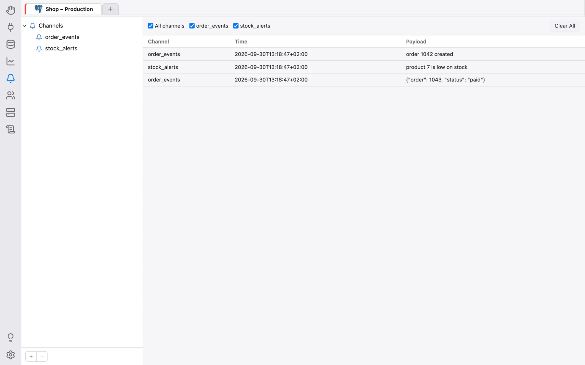

Benachrichtigungen
Der Bereich Benachrichtigungen (englisch Notify) lauscht auf asynchrone Benachrichtigungen, die Sitzungen über die Datenbank selbst versenden, und zeigt sie an, sobald sie eintreffen:
- PostgreSQL:
LISTEN/NOTIFY; - Oracle:
DBMS_ALERT; - Firebird: Events (
POST_EVENT).
MySQL, MariaDB, SQL Server und SQLite haben keine Entsprechung; für sie meldet der Bereich NOTIFY-Kanäle werden für …-Verbindungen nicht unterstützt., statt die Funktion auszublenden.
Den Bereich öffnen
Klicken Sie in der linken Leiste auf das Symbol Benachrichtigungen. Der Bereich teilt sich die Leiste der geöffneten Verbindungs-Tabs mit dem Bereich Datenbank — wählen Sie einen Tab, um die Kanäle und Nachrichten dieser Verbindung zu sehen. Ist keine Verbindung geöffnet, zeigt er Keine Verbindung geöffnet. und bittet Sie, zuerst im Bereich Datenbank eine zu öffnen.
Das Abhören hängt nicht davon ab, ob der Bereich Benachrichtigungen sichtbar ist: Sobald eine Verbindung im Bereich Datenbank geöffnet wird, beginnt OmniDB, auf ihren gespeicherten Kanälen zu lauschen (über eine separate, eigene Verbindung, sodass es Ihre Abfrage- und Konsolen-Tabs nie beeinträchtigt), und hört damit auf, wenn dieser Verbindungs-Tab geschlossen wird.
Kanäle
Die linke Seite des Bereichs ist ein Baum mit dem Wurzelknoten Kanäle. Um einen Kanal hinzuzufügen, klicken Sie auf + unter dem Baum (oder Rechtsklick auf den Baum → Kanal hinzufügen), geben den Namen in das Feld Kanalname ein und drücken Enter. OmniDB beginnt sofort, darauf zu lauschen. Oracle-Alert-Namen sind auf 30 Byte begrenzt, Firebird-Event-Namen auf 255.
Ein Rechtsklick auf einen Kanal bietet:
- Pausieren / Fortsetzen — das Abhören dieses Kanals anhalten oder wieder aufnehmen (ein pausierter Kanal zeigt eine durchgestrichene Glocke);
- Nachrichten löschen — die Nachrichten dieses Kanals aus der Liste entfernen;
- Löschen — den Kanal nach einer Bestätigung entfernen (auch über − unter dem Baum möglich). Seine Nachrichten werden ebenfalls entfernt.
Kanäle und ihr pausierter/aktiver Zustand werden pro OmniDB-Benutzer und pro Verbindung gespeichert und sind daher nach einem Neustart wieder da. PostgreSQL-Kanalnamen werden als gequotete Bezeichner verwendet, bei denen Groß- und Kleinschreibung unterschieden wird.
Nachrichten
Empfangene Nachrichten erscheinen rechts in einer Tabelle mit den Spalten Kanal, Zeit (wann OmniDB sie empfangen hat) und Inhalt (Payload). Firebird-Events tragen keine Nutzdaten, daher zeigt Inhalt bei ihnen an, wie oft das Event ausgelöst wurde.
Die Reihe von Kontrollkästchen über der Tabelle filtert die Liste: Alle Kanäle oder nur die Kanäle, die Sie ankreuzen. Alle löschen leert die gesamte Liste.
Nachrichten werden nur in dem Browser (bzw. Desktop-Fenster) gehalten, der sie empfangen hat: Sie werden nirgends gespeichert und sind nach einem Neuladen der Seite verschwunden.
Treffen Nachrichten schneller ein, als die Seite sie verarbeitet, beendet OmniDB das Abhören, statt sie unbegrenzt auflaufen zu lassen; es beendet es auch, wenn die abhörende Verbindung ausfällt. In beiden Fällen erklärt ein Hinweisbanner den Grund, zusammen mit einer Schaltfläche Abhören neu starten.

Eine Testbenachrichtigung senden
Benachrichtigungen werden mit gewöhnlichem SQL gesendet, zum Beispiel aus einem Abfrage-Tab auf derselben Datenbank:
-- PostgreSQL (delivered when the transaction commits)
NOTIFY my_channel, 'hello';
SELECT pg_notify('my_channel', 'hello');
-- PostgreSQL, channel name with upper-case letters: quote it
NOTIFY "MyChannel", 'hello';
-- Oracle
BEGIN
DBMS_ALERT.SIGNAL('my_alert', 'hello');
COMMIT;
END;
-- Firebird (the event is posted on commit)
EXECUTE BLOCK AS BEGIN POST_EVENT 'my_event'; END